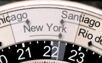
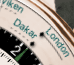
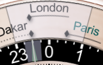
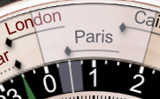
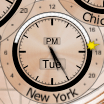

Terra is a world-time watch.
There are 24 cities arrayed around the outer edge of the front of the watch; you may customize the selection of cities from EMERALD_PRODUCT's 80,000-city database (see below). Each city has an associated "dot hand" which indicates that city's time against the 24-hour ring (in black and white, just inside of the city ring). If the city's time zone uses Daylight Saving Time (DST, also called Summer Time in some locales), then the dot hand will move along its "channel" twice a year when DST transitions for that city; each dot moves independently of the others according to the rules for its city's time zone. If the city's time zone does not use DST, there will not be a channel for the dot, but instead a dashed line under the city to associate the city with the dot.
The city fully underneath the clear overlay indicator at the top of the watch is used to determine the time shown by the large "main" 12-hour hands in the center of the watch, along with the date and day of the week shown in the windows. The pushers at the upper left and right of the watch change the city selection by rotating the ring. Below the selected city, over the 24-hour dial, is a smaller clear indicator with a hairline center; this will be aligned with the top city's dot, and thus will indicate the 24-hour time of the selected city on the 24-hour dial.
For example, in the picture below, New York is the selected city (and thus New York's time will be displayed in the central dial). New York has a solid channel for its dot, so its time zone uses Daylight Saving Time, and DST is in effect (the dot is at the right end of its channel). We can see from Santiago's dot that the time in Santiago and New York is the same on the current date, but that Santiago is not on DST at the current time (its dot is at the left of its channel).  The time in New York (and Santiago) is about 22:15, or 10:15pm, since the dots for those cities are aligned with that time on the 24-hour dial (we also know it's evening because the time is in the dark "night" zone from 6pm to 6am).
 In the picture at right, it may be seen that Dakar does not use DST, because it has a dashed line in place of the dot-motion channel. In this picture we can also see the green UTC hour hand in the black portion of the 24-hour dial (Dakar's timezone is at UTC+0 year-round).
The city labels are "laser etched" into the ring so that the background shows through, and underneath the ring are colored background parts that move to change the apparent color of the city labels. If the city label is black, it means that the city is on the same day as the central "main" time, and thus the city's day may be read from the central windows. If the city label is green, it means the city is on the next day (relative to the central windows), and if the city label is red, it means the city is on the previous day. These two pictures show the same time (11:30pm in London, 12:30am the next day in Paris) with the outer ring in two different positions; when London is selected by the clear overlay, Paris is on the next day and is green, but when Paris is selected, London is on the previous day and is red.
There are 24 blue dots on the central world map, and they indicate the locations of the 24 cities arrayed around the city ring:
Because the cities are at different latitudes (and offsets from the nominal longitudinal time zone meridian), it is not possible to display the actual times of sunrise and sunset (and thus the daytime and nighttime hours) for all 24 cities, and so the day/night ring on this face is fixed with 12 hours of day (white) and 12 hours of night (black). Contrast this with Mauna Kea, and with the back of this watch, where the actual times of day and night, based on the sunrise and sunset times at a single location, are shown.
Nearly all cities will have their dot either to the left or the right of the city label center, rather than directly underneath the center. This is done to minimize the distance the dot must be from the label when DST is in effect; for example, when New York is on standard time (EST, UTC-5), the dot is slightly to the left of the label center, but when it is on daylight time (EDT, UTC-4), the dot is slightly to the right of the label center. The same rule is followed for cities that do not have DST, so that the cities can be evenly spaced around the ring; this has the additional advantage that such cities can usually appear in two different positions on the ring, thus giving more flexibility to the choice of cities (see below).
In Set mode, the lower pusher advances the time by one hour. And, in addition to the usual hand dragging and window tapping, the time can also be changed by dragging the 24-hour ring. (But notice that the 24-hour ring moves counterclockwise as time goes forward.)
Each subdial has a central set of 12-hour hands, a day/night ring like that of Mauna Kea showing the actual times of day and night against an outer 24-hour dial, a Sun hand which indicates the approximate time against that outer dial, and windows for AM/PM and for the day of the week.
For example, in the picture below,  it's around sunset in New York on Tuesday, about 5:25pm. The time can be read most easily by the central 12-hour hands and the PM in the window, but it may also be approximately read with the 24-hour sun hand, which is between the 18 and the previous dot at 17.
In addition, the largest subdial on the left contains a second hand and a window for the day of the month. There is nothing special about the largest subdial other than its size; you can set its time zone to any city in the database just like the others. In particular, it does not display information for the location and time zone used by other watches in EMERALD_PRODUCT, unless you specifically select that city in the Settings.
The back also has a small moonphase dial in the upper left. It does not rotate like the moonphase dials on Chandra, Geneva, and Haleakala, because it is intended to apply to all of the cities shown (the moonphase does not depend in any significant way on observer position, but the rotation does).
The time on this watch is synchronized among all 28 cities that are displayed (24 on the front, and 4 on the back). Thus you can tap the crown to enable Set mode, move the time (and/or date) forward to a particular time in one city, and then read the corresponding time in other cities. Time zone rules are followed properly in each city so this calculation will be exact no matter what the date. Note, however, that
This watch allows you to customize the cities that are shown, both on the front and the back.
To customize the watch, tap the "Settings" (gear) button at the bottom right of the screen, to bring up the app Settings.
At the bottom of the panel are entries for choosing the cities for the front and for the back; select one and continue:
The front world-time cities are constrained according to the operation of the watch; because a city's dot must be close to the city, and because the dot is read against the 24-hour dial, each city in the database may only be placed in one or two of the 24 locations on the ring. (See here for the exact rules.)
There are two ways to select cities for the front side. In both cases, tap the Settings button (see above) and enter the front-side (World-time ring) settings. Then use one of the following techniques:
If you have a particular city that you would like to add to the set, tap the Search entry:
and enter the name of the city in the Search panel at the top of the form. When the city you want appears below in the list,
you can tap it to proceed to the next screen.
On that screen will appear the current city for each slot that your chosen city may appear in:
Sometimes there will be one such slot and sometimes two as there are above (see here for the exact rule). Select one of the slots to replace the city in that slot with your chosen city, and return to the Search form, where you can continue to select another city and repeat.
The other way of selecting cities for the front side is to go to each slot in turn, and choose among the cities which can be placed in that slot. Instead of tapping the Search entry, tap one of the 24 slot entries below it to advance to the list of candidate cities for that slot:
The cities available for that slot will appear in population order (largest cities at the top), or you can type in the Search box to find a particular city that may be placed in the slot.
Some of the cities may appear in more than one slot, which can help in selecting a particular set of cities. For example, both Papeete and Honolulu have the same time zone, but since neither uses DST, one can be placed to the left of its dot, and the other to the right of its dot. The symbol at the right of each line indicates whether a given city can appear only in the current slot ("="), in this slot and the following one ("=>"), or in this slot and the previous one ("<="). See here for the exact rules which dictate these placements.
The back subdial cities are not constrained in any way; you can place any of the cities in the database in any subdial, and you can even place the same city in multiple dials if you wish. Cities on the back may also be the same as cities on the front. To select a city for the back, tap the Settings button at the bottom right of the screen, select "Back subdials", and then choose the entry corresponding to the subdial you want to change:
Now just type the name of your city; when it appears in the list below the search field you can choose it for that subdial.